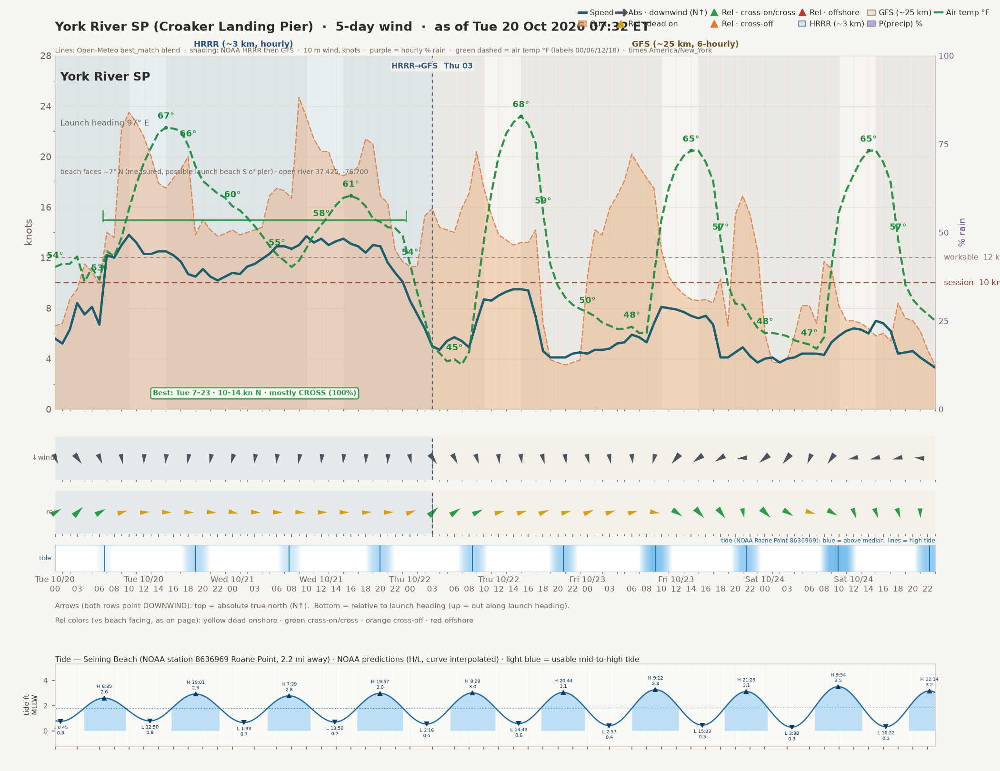
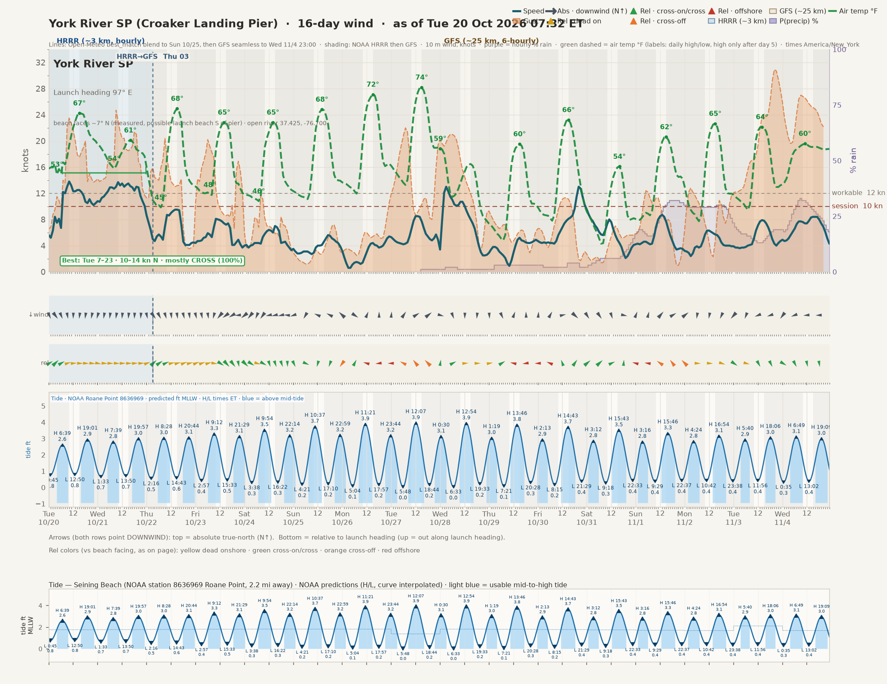
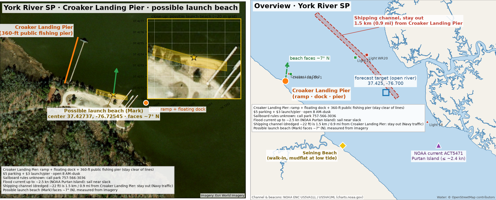
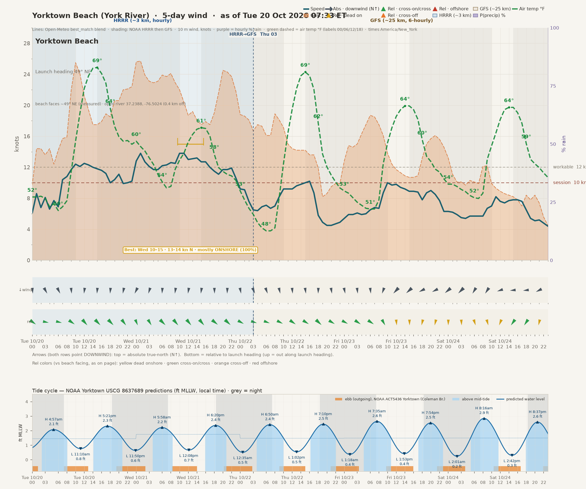
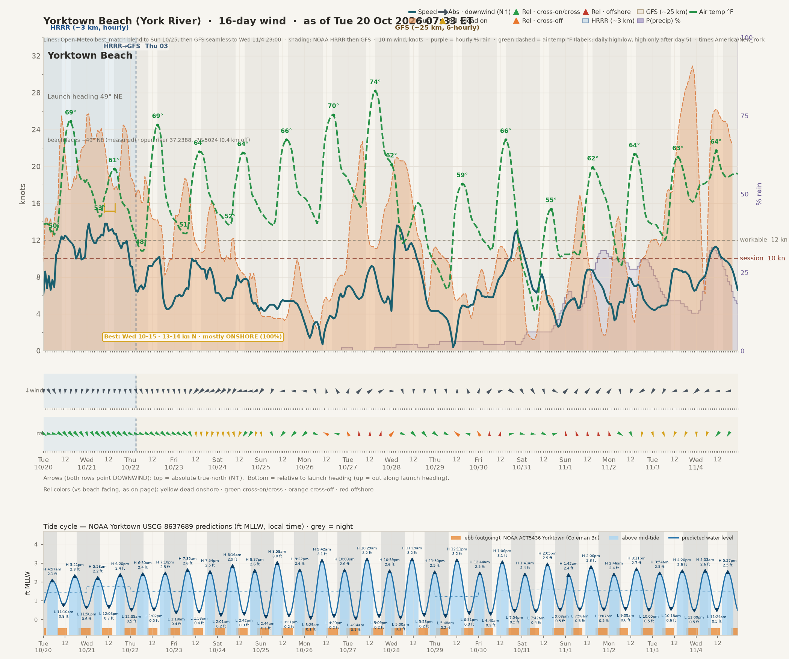
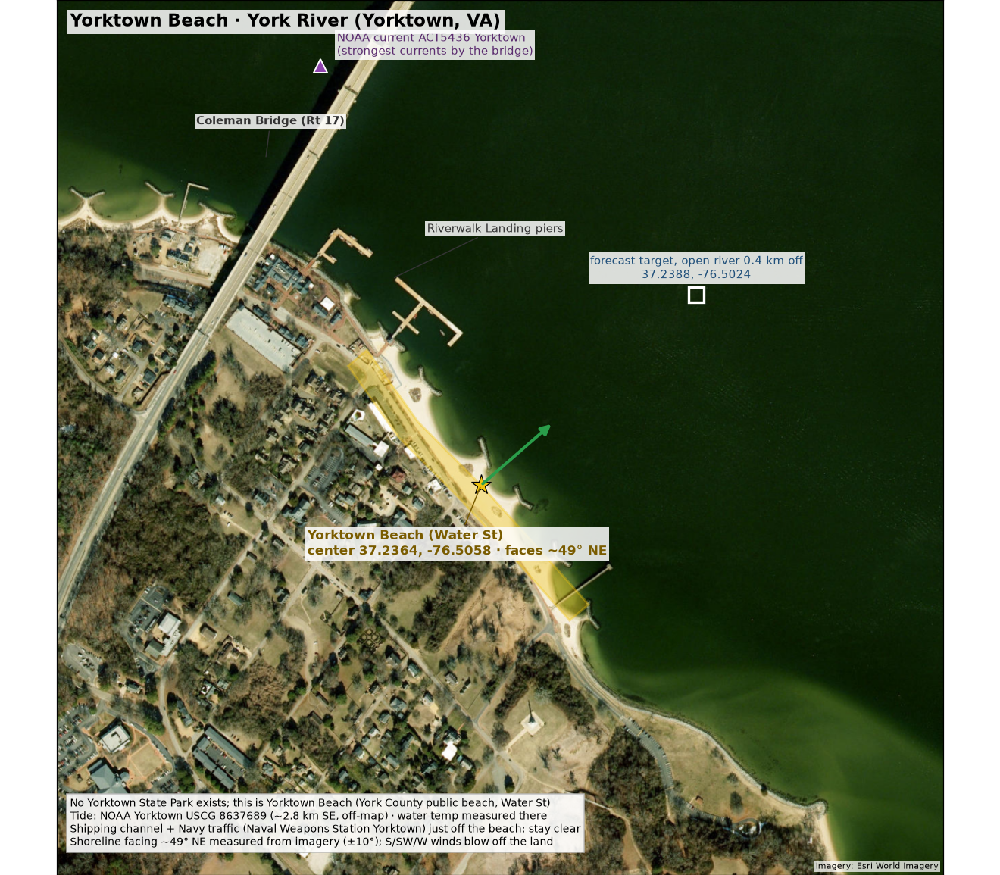

← all locations (va-lakes-wind.html) · jump to: Croaker Landing Pier · Yorktown Beach
York River · wind + tide · Croaker Landing Pier & Yorktown Beach
Mark's directions: N best · E good · W maybe/okay · S and SW won't work (blow over land, no-go); at each beach anything dead offshore vs its measured facing is also no-go.
Data: Open-Meteo best_match (HRRR, then GFS) · as of Tue 20 Oct 2026 07:32 ET
1 · York River State Park · Croaker Landing Pier
5-day

16-day

Daily max (knots) + tides
Tides: Seining Beach (NOAA station 8636969 Roane Point, 2.2 mi away) · NOAA CO-OPS predictions, MLLW, local time. Good wind + tide = 8 AM–6 PM hours with wind ≥10 kn, not offshore vs the 7° beach facing and not S/SW, while the tide is above the day's mid-tide level.
| Day | Max wind | Max gust | Dir at max | Hour | vs beach | High | Low | Mark's rating | Good wind + tide |
|---|---|---|---|---|---|---|---|---|---|
| Tue Oct 20 | 13.8 | 23.5 | N (357°) | 10 AM | onshore | 6:39 AM 2.6 ft 7:01 PM 2.9 ft | 12:45 AM 0.8 ft 12:50 PM 0.8 ft | best | ✅ 8 AM–10 AM, 4 PM–7 PM |
| Wed Oct 21 | 13.7 | 24.7 | N (6°) | 10 AM | onshore | 7:39 AM 2.8 ft 7:57 PM 3.0 ft | 1:33 AM 0.7 ft 1:50 PM 0.7 ft | best | ✅ 8 AM–11 AM, 5 PM–7 PM |
| Thu Oct 22 | 9.5 | 20.4 | N (349°) | 2 PM | onshore | 8:28 AM 3.0 ft 8:44 PM 3.1 ft | 2:16 AM 0.5 ft 2:43 PM 0.6 ft | best (light) | |
| Fri Oct 23 | 8.1 | 20.2 | NNE (30°) | 10 AM | cross-on | 9:12 AM 3.3 ft 9:29 PM 3.1 ft | 2:57 AM 0.4 ft 3:33 PM 0.5 ft | good (light) | |
| Sat Oct 24 | 7.0 | 11.7 | ENE (77°) | 3 PM | cross | 9:54 AM 3.5 ft 10:14 PM 3.2 ft | 3:38 AM 0.3 ft 4:22 PM 0.3 ft | good (light) | |
| Sun Oct 25 | 5.6 | 7.2 | ESE (119°) | 5 PM | cross | 10:37 AM 3.7 ft 10:59 PM 3.2 ft | 4:21 AM 0.2 ft 5:10 PM 0.2 ft | maybe (light) | |
| Mon Oct 26 | 5.4 | 10.5 | S (180°) | 11 PM | OFFSHORE | 11:21 AM 3.9 ft 11:44 PM 3.2 ft | 5:04 AM 0.1 ft 5:57 PM 0.2 ft | no (light) | |
| Tue Oct 27 | 8.5 | 22.0 | WSW (238°) | 12 PM | cross-off | 12:07 PM 3.9 ft | 5:48 AM 0.0 ft 6:44 PM 0.2 ft | no (light) | |
| Wed Oct 28 | 13.0 | 21.0 | NNW (343°) | 3 AM | cross-on | 12:30 AM 3.1 ft 12:54 PM 3.9 ft | 6:33 AM 0.0 ft 7:33 PM 0.2 ft | best | ✅ 10 AM–1 PM |
| Thu Oct 29 | 5.2 | 9.3 | SSW (200°) | 3 PM | OFFSHORE | 1:19 AM 3.0 ft 1:46 PM 3.8 ft | 7:21 AM 0.1 ft 8:28 PM 0.3 ft | no (light) | |
| Fri Oct 30 | 13.0 | 11.3 | NNW (334°) | 8 PM | cross-on | 2:13 AM 2.9 ft 2:43 PM 3.7 ft | 8:15 AM 0.2 ft 9:29 PM 0.4 ft | good (light) | |
| Sat Oct 31 | 9.5 | 7.0 | NNW (327°) | 12 AM | cross-on | 3:12 AM 2.8 ft 3:43 PM 3.5 ft | 9:18 AM 0.3 ft 10:33 PM 0.4 ft | good (light) | |
| Sun Nov 01 | 8.7 | 12.4 | SW (224°) | 1 PM | cross-off | 3:16 AM 2.8 ft 3:46 PM 3.3 ft | 9:29 AM 0.4 ft 10:37 PM 0.4 ft | no (light) | |
| Mon Nov 02 | 6.3 | 12.8 | N (11°) | 11 AM | onshore | 4:24 AM 2.8 ft 4:54 PM 3.1 ft | 10:42 AM 0.4 ft 11:38 PM 0.4 ft | best (light) | |
| Tue Nov 03 | 7.9 | 30.9 | ENE (70°) | 2 PM | cross-on | 5:40 AM 2.9 ft 6:06 PM 3.0 ft | 11:56 AM 0.4 ft | good (light) | |
| Wed Nov 04 | 8.4 | 27.0 | E (98°) | 3 PM | cross | 6:49 AM 3.1 ft 7:09 PM 3.0 ft | 12:35 AM 0.3 ft 1:02 PM 0.4 ft | good (light) |
Good wind + tide windows
- Tue Oct 20: 8 AM–10 AM, 4 PM–7 PM
- Wed Oct 21: 8 AM–11 AM, 5 PM–7 PM
- Wed Oct 28: 10 AM–1 PM
Map

2 · Yorktown Beach (Water St, Yorktown)
With this facing: N and E are cross-onshore (N best, E good per Mark), NE dead onshore, NW cross-shore (good), W cross-off (maybe), S/SW blow off the land (no).
5-day

16-day

Daily max (knots) + tides + current
Tides: NOAA Yorktown USCG 8637689 predictions, MLLW, local time. Current: NOAA ACT5436 Yorktown max flood/ebb/slack. Good wind + tide = 8 AM–6 PM hours with wind ≥10 kn, Mark's rating not "no" (S/SW and anything offshore of the 49° facing), tide above the day's mid-tide; "(ebb ✔)" = whole window on the outgoing tide (the blog's preference), "(part ebb)" = partly.
| Day | Max wind | Max gust | Dir at max | Hour | vs beach | High | Low | Current (Coleman Br.) | Mark's rating | Good wind + tide |
|---|---|---|---|---|---|---|---|---|---|---|
| Tue Oct 20 | 12.5 | 25.5 | N (8°) | 12 PM | cross-on | 4:57 AM 2.1 ft 5:21 PM 2.3 ft | 11:10 AM 0.8 ft 11:50 PM 0.6 ft | slack 1:20 AM flood 3:27 AM 0.6 kn slack 7:16 AM ebb 10:35 AM 0.9 kn slack 12:57 PM flood 3:36 PM 1.0 kn slack 7:21 PM ebb 10:59 PM 1.2 kn | best | ✅ 2 PM–7 PM |
| Wed Oct 21 | 13.8 | 25.7 | NNE (26°) | 1 AM | cross-on | 5:58 AM 2.2 ft 6:20 PM 2.4 ft | 12:08 PM 0.7 ft | slack 2:09 AM flood 4:26 AM 0.8 kn slack 8:09 AM ebb 11:27 AM 1.0 kn slack 2:03 PM flood 4:34 PM 1.0 kn slack 8:10 PM ebb 11:46 PM 1.4 kn | best | ✅ 4 PM–7 PM |
| Thu Oct 22 | 10.2 | 18.9 | N (352°) | 4 PM | cross-on | 6:50 AM 2.4 ft 7:10 PM 2.5 ft | 12:35 AM 0.5 ft 1:02 PM 0.5 ft | slack 2:51 AM flood 5:18 AM 1.0 kn slack 8:56 AM ebb 12:19 PM 1.3 kn slack 3:03 PM flood 5:27 PM 1.1 kn slack 8:49 PM | best | ✅ 4 PM–5 PM |
| Fri Oct 23 | 10.0 | 18.7 | NNE (32°) | 10 AM | onshore | 7:35 AM 2.6 ft 7:54 PM 2.5 ft | 1:18 AM 0.4 ft 1:53 PM 0.4 ft | ebb 12:29 AM 1.6 kn slack 3:26 AM flood 6:04 AM 1.3 kn slack 9:42 AM ebb 1:08 PM 1.6 kn slack 3:56 PM flood 6:14 PM 1.2 kn slack 9:23 PM | good | ✅ 10 AM–11 AM (ebb ✔) |
| Sat Oct 24 | 8.2 | 13.2 | ENE (62°) | 11 AM | onshore | 8:16 AM 2.9 ft 8:37 PM 2.6 ft | 2:01 AM 0.2 ft 2:42 PM 0.3 ft | ebb 1:09 AM 1.9 kn slack 3:59 AM flood 6:46 AM 1.7 kn slack 10:28 AM ebb 1:54 PM 1.8 kn slack 4:46 PM flood 6:57 PM 1.2 kn slack 9:54 PM | good (light) | |
| Sun Oct 25 | 5.5 | 9.9 | E (86°) | 12 PM | cross-on | 8:58 AM 3.0 ft 9:22 PM 2.6 ft | 2:44 AM 0.1 ft 3:31 PM 0.2 ft | ebb 1:45 AM 2.2 kn slack 4:32 AM flood 7:28 AM 2.1 kn slack 11:15 AM ebb 2:37 PM 2.0 kn slack 5:34 PM flood 7:40 PM 1.2 kn slack 10:26 PM | good (light) | |
| Mon Oct 26 | 6.8 | 8.9 | SSW (198°) | 11 PM | cross-off | 9:42 AM 3.1 ft 10:09 PM 2.6 ft | 3:29 AM 0.1 ft 4:20 PM 0.2 ft | ebb 2:21 AM 2.5 kn slack 5:09 AM flood 8:11 AM 2.3 kn slack 12:02 PM ebb 3:21 PM 2.1 kn slack 6:25 PM flood 8:24 PM 1.1 kn slack 11:01 PM | no (light) | |
| Tue Oct 27 | 9.2 | 22.7 | WSW (238°) | 1 PM | OFFSHORE | 10:29 AM 3.2 ft 10:59 PM 2.6 ft | 4:14 AM 0.1 ft 5:09 PM 0.2 ft | ebb 2:58 AM 2.6 kn slack 5:49 AM flood 8:57 AM 2.5 kn slack 12:51 PM ebb 4:08 PM 2.0 kn slack 7:20 PM flood 9:13 PM 1.0 kn slack 11:43 PM | no (light) | |
| Wed Oct 28 | 13.6 | 21.0 | NNW (336°) | 3 AM | cross | 11:19 AM 3.2 ft 11:50 PM 2.5 ft | 5:00 AM 0.1 ft 5:58 PM 0.2 ft | ebb 3:41 AM 2.6 kn slack 6:33 AM flood 9:46 AM 2.5 kn slack 1:40 PM ebb 5:01 PM 2.0 kn slack 8:20 PM flood 10:08 PM 0.9 kn | best | ✅ 8 AM–3 PM (part ebb) |
| Thu Oct 29 | 6.6 | 11.3 | SSW (194°) | 11 PM | cross-off | 12:11 PM 3.2 ft | 5:48 AM 0.2 ft 6:51 PM 0.3 ft | slack 12:32 AM ebb 4:30 AM 2.4 kn slack 7:23 AM flood 10:39 AM 2.5 kn slack 2:33 PM ebb 5:59 PM 1.9 kn slack 9:24 PM flood 11:06 PM 0.8 kn | no (light) | |
| Fri Oct 30 | 13.0 | 11.7 | NNW (336°) | 9 PM | cross | 12:44 AM 2.5 ft 1:06 PM 3.1 ft | 6:40 AM 0.3 ft 7:54 PM 0.5 ft | slack 1:29 AM ebb 5:27 AM 2.2 kn slack 8:18 AM flood 11:31 AM 2.4 kn slack 3:28 PM ebb 6:59 PM 1.9 kn slack 10:25 PM | good | |
| Sat Oct 31 | 11.1 | 9.1 | NNW (331°) | 12 AM | cross | 1:41 AM 2.4 ft 2:05 PM 2.9 ft | 7:42 AM 0.4 ft 9:03 PM 0.5 ft | flood 12:03 AM 0.8 kn slack 2:35 AM ebb 6:32 AM 1.9 kn slack 9:19 AM flood 12:25 PM 2.2 kn slack 4:27 PM ebb 8:02 PM 1.8 kn slack 11:22 PM | good (light) | |
| Sun Nov 01 | 8.8 | 16.9 | SW (221°) | 12 PM | OFFSHORE | 1:42 AM 2.4 ft 2:06 PM 2.8 ft | 7:56 AM 0.5 ft 9:07 PM 0.5 ft | flood 1:02 AM 0.8 kn slack 2:50 AM ebb 6:42 AM 1.8 kn slack 9:26 AM flood 12:23 PM 1.9 kn slack 4:28 PM ebb 8:03 PM 1.8 kn slack 11:17 PM | no (light) | |
| Mon Nov 02 | 7.9 | 14.6 | NNE (17°) | 11 AM | cross-on | 2:46 AM 2.4 ft 3:11 PM 2.7 ft | 9:09 AM 0.6 ft 10:05 PM 0.5 ft | flood 1:09 AM 0.9 kn slack 4:09 AM ebb 7:55 AM 1.7 kn slack 10:36 AM flood 1:30 PM 1.6 kn slack 5:31 PM ebb 9:01 PM 1.7 kn | best (light) | |
| Tue Nov 03 | 8.9 | 30.9 | ENE (70°) | 12 PM | onshore | 3:54 AM 2.5 ft 4:20 PM 2.6 ft | 10:18 AM 0.6 ft 11:00 PM 0.5 ft | slack 12:10 AM flood 2:23 AM 1.0 kn slack 5:29 AM ebb 9:03 AM 1.7 kn slack 11:53 AM flood 2:45 PM 1.4 kn slack 6:31 PM ebb 9:55 PM 1.7 kn | good (light) | |
| Wed Nov 04 | 11.3 | 26.8 | E (86°) | 11 AM | cross-on | 5:03 AM 2.6 ft 5:27 PM 2.5 ft | 11:24 AM 0.5 ft 11:50 PM 0.4 ft | slack 1:02 AM flood 3:35 AM 1.2 kn slack 6:46 AM ebb 10:09 AM 1.7 kn slack 1:15 PM flood 4:01 PM 1.3 kn slack 7:24 PM ebb 10:47 PM 1.7 kn | good | ✅ 2 PM–4 PM |
Good wind + tide windows
- Tue Oct 20: 2 PM–7 PM
- Wed Oct 21: 4 PM–7 PM
- Thu Oct 22: 4 PM–5 PM
- Fri Oct 23: 10 AM–11 AM (ebb ✔)
- Wed Oct 28: 8 AM–3 PM (part ebb)
- Wed Nov 04: 2 PM–4 PM
Map

Chart arrow colors are relative to each beach's measured facing (the chart colors don't apply Mark's S/SW no-go; the tables do).